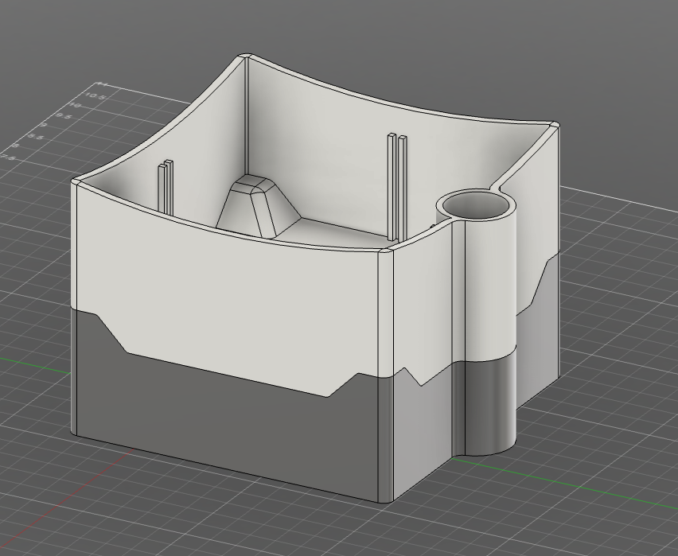
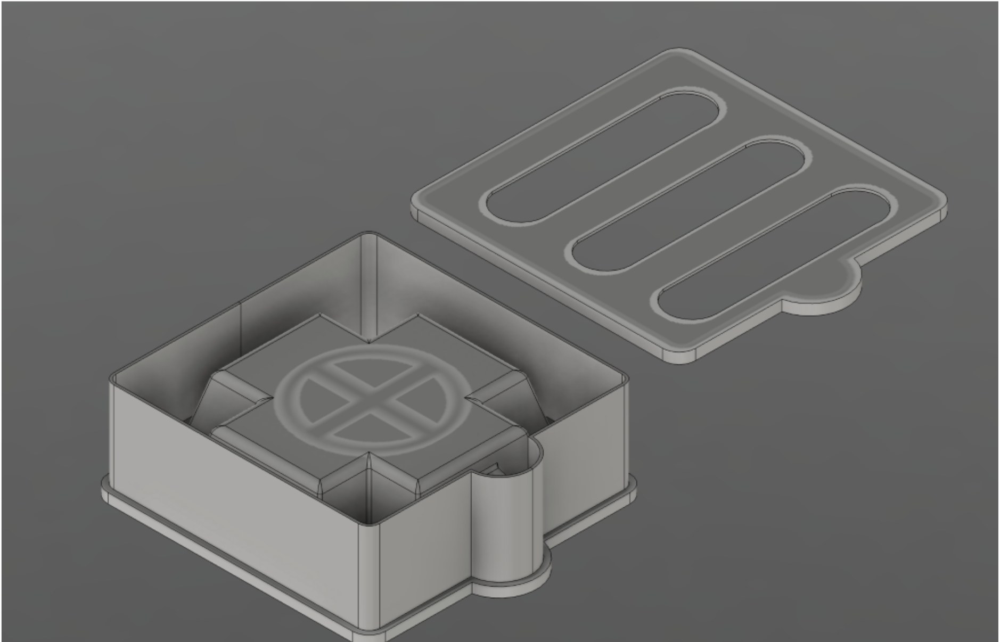

Self Watering Planter to combat SAD
A set of self-watering planters designed to provide consistent hydration for indoor plants. After taking inspiration from online videos of people using 3D prints as mold for concrete form, I wanted to create my own planters that involve concrete to create a sense of quality.
Technologies used: Mechanical design, 3D printing, material selection, CAD modeling.
About the project: The main focus of this project was to create a planter that is both functional and visually appealing. The design takes into account factors such as drainage, plant health, and ease of use while maintaining a modern that involves 3d printed forms.
Design Overview
Initially, in my Engineering foundations class, we were tasked with solving a problem that many students face. Knowing that many students are unable to keep plants alive and well in their dorms, I decided to create a self-watering planter that would help students keep their plants healthy. I also wanted to incorporate a concrete form in the design which lead to my first planter design. A year later, using the knowledge I gained from my Engineering foundations class, I decided to create another planter with a reusable mold to create easy christmas gifts for my family.
Design 1: A Self-Watering Planter to Combat SAD
Summary
We designed a device to boost student well-being and combat the effects of Seasonal Affective Disorder (SAD), which effects how students think, react, and handle daily challenges. Plants are known to be benificial to mental health and can help with attention span, energy levels, blood pressure, and spatial perception, so by designing a self-watering planter, we can mitigate the effects of SAD in college students.
Problem Statement
Seasonal Affective Disorder (SAD) can change the way a person thinks, reacts, and deals with everyday challenges. Those suffering from SAD fall into a depressed mood each year in the fall and continue to feel depressed throughout the winter and into the early spring, when those feelings disappear. About 5% of adults in the U.S. experience SAD, and it typically lasts about 40% of the year(Seasonal Affective Disorder (SAD), n.d.). Specifically, 25% of all college students across the United States suffer from SAD, and this percentage increases at higher latitudes or more cloudy areas of the country(Winter Blues/Seasonal Affective Disorder, n.d.). This is an issue as SAD can add additional stress to an already demanding academic and social environment(Seasonal Depression and Its Effects on College Students - ASI Cal Poly Pomona, 2024). SAD often goes unnoticed but can significantly impact academic performance(Seto et al., 2021). Currently, students who are affected by SAD will see negative results in their schoolwork and an increase in stress. Ideally, there would be more info for students to learn about SAD or some items that could help with SAD, an example of such is a planter box. Plants have many benefits for humans, such as lower blood pressure, increase people’s attentiveness, increase energy levels, and improve the overall perception of the space you are in. (Han et al., 2022). A study in Shanghai during Covid-19 found that residents exposed to greenery experienced better mental health during the Covid-19 lockdown, which applies to college students who are locked in a dorm room during the winter months.(Zhang et al., 2022)
Design Objectives
- It's accessible design that all people can access for themselves, especially students.
- It's a design that remains relatively autonomous, allowing it to remain functional even when neglected for a certain amount of time.
- It's a compact/portable solution that can be easily set up.
- It's an aesthetically pleasing design that people will associate with.
- It's modular to allow multiple designs to fit together.
- It's big enough for plants to grow but small enough for tighter spaces, like dorm rooms or in classrooms.
- The design must ensure efficient growth of plants.
About the Design
When coming up with design options we were interested in something visually appealing while having the capacity to hold enough water for at least 2 weeks. We decided upon this design:


Conclusion
This is a favorite project of mine. I was able to learn a bunch of tools in Fusion 360 to help with my workflow along with generally improving my ability to design an idea from my head. If I had more time to work on this project there would have been a couple things I would have liked to improve.
- When removing the base from the mould we had trouble taking the plastic off without breaking it. I have since improved my skills in making molds, see my other self watering planter project. Or I would have made moulds out of resin which were flexible.
- I would have liked to add a lighting system to the planter to add grow lights if the planter was somewhere without enough natural light.
- Although the concrete was very visually appealing and very sturdy the time it took to cure was severely annoying, up to a week or more at times. Again this is a problem that I worked on in my other self watering planter project where I switched to plaster for the molds.
All together this was a great project that helped me develop skills that I use in classes at school and more. If you have any questions about it feel free to reach out!